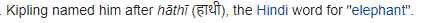

יום 3: הסבר על Type annotations כמילון - “Lukas Graham” להקה שמוכרת בעיקר בזכות השיר 7years שזה גם הגיל שרשום ב-value… 


יום 3: הסבר על Type annotations כמילון - “Lukas Graham” להקה שמוכרת בעיקר בזכות השיר 7years שזה גם הגיל שרשום ב-value… 
יום ראשון, שאלה שניה: מנצנץ כוכב קטן.
שיר נושא התרגיל.
מוסיף - זה שיר נושא התרגיל עם שגיאות כתיב, בדיוק כמו השגיאות שיש בשיר. 
מרגיש קצת אובייס אבל רוספורף פיינס מ"תרגיל אפל" הוא פרופסור סנייפ במהופך (השם התהפך בדיוק באותו האופן שבו הכישוף הפך את מילות הספרים בספריה) ו"תם ונשלם הקונדס" זו הדרך לסגור את מפת הקונדסאים
log_error = create_logger(“Errors”)
log_system = create_logger(“System”)
log_error(“CRITICAL FAILURE: Can’t find Nemo.”)
log_system(“Chop Suey”)
טוב יש שגיאה בלמצוא את נמו כי הוא נאבד…
מאמין שקולות של לוויתן יעזרו לנו לתקן את השגיאה:
")
והנה שגיאת ה-Chop Suey ב-System of a down:
ולא נראה לי שאי פעם הזכרנו את זה, אבל “hello world” הוא סלב בפני עצמו:
התרגיל החלופי של היום הראשון “ועל ים לקו שמונה מלכות” מרפרנס להגדה של פסח “וְעַל הַיָם לָקוּ חֲמִשִּׁים מַכּוֹת” (ותוכן התרגיל הוא פיתרון של חידת שמונה המלכות) 
יום 4 - תרגיל “קיבוץ גלויות”, בדוגמה לפונקציה join יש את Mushu ו- Cricket
הרי הם מהסרט מולאן 

 (שלצערנו ה-live action לא יצא עדיין)
(שלצערנו ה-live action לא יצא עדיין)
למיטב הבנתי הם לא מופיעים בסרט בכלל 
בש.ב של יום 5: קולונל האטי הוא מנהיג הפילים מספר הג’ונגל
וביגבאגים היא התכנית של החרקים ששודרה בערוץ הילדים 
במחברת סיכום תרגיל None shall pass קצת אובייס אבל רפרנס לגנדלף You shall not pass 
האמת שגם אני חשבתי על זה, אבל הרפרנס שהתכוונתי אליו בפועל אפילו יותר מפתיע
אויייי מצאתי חחח
מונטי פייתון כמובן 
מוסיף - קוראים ככה לתרגיל כי פילים זוכרים ממש טוב
ואם אנחנו כבר שם – למה קוראים ככה לפיל בספר הג’ונגל? 
 י
י

המילה פיל בהינדו 
{kind=link}